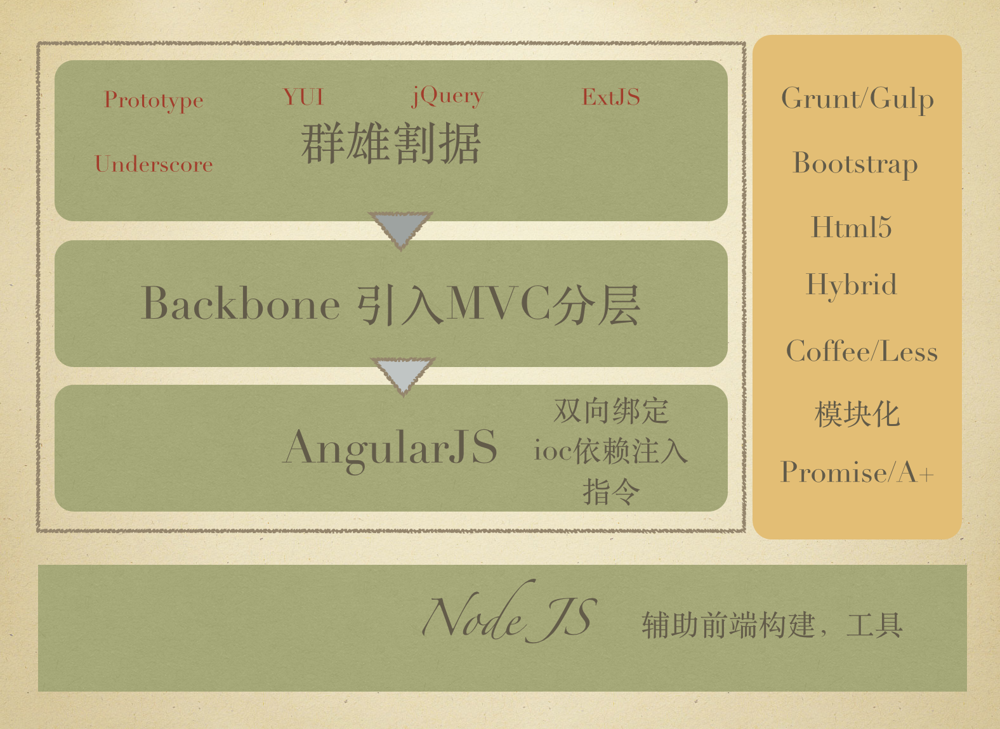

Node && js 全栈
高可用架构专用
主要内容
- Why Node.js ？
- 历史
- 槽点
- 架构平衡和选择
- 企业级
- 我眼中的Node.js核心
- 快速开发实践
- 全栈 or 全烂 ？
- 工具链
- 前端开发4阶段
- Hybrid开发
- 跨平台
- 全栈的可能
- 未来
还在调整
讲师介绍
桑世龙，目前在天津创业，空弦科技 CTO，开源项目Moajs作者，公司目前使用技术主要是Node.js， 技术栈算所谓的MEAN（mongodb + express + angular + node）； 曾在新浪，网秦等工作过； 算全栈程序员吧，带过前端、后端、数据分析、移动端负责人、做过首席架构师、技术总监，目前主要从事技术架构 + 招人工作
Part 1：Why Node.js ？
已经7岁的Node.js，你还熟悉么？
以前？现在？
http://stackoverflow.com/research/developer-survey-2016
回顾一下2015年
http://i5ting.github.io/history-of-node-js/
Q1(1季度)
- IO.js 1.0.0 发布
- Joyent 推进建立 Node.js 基金会
- Joyent, IBM, Microsoft, PayPal, Fidelity, SAP and The Linux Foundation Join Forces to Support Node.js Community With Neutral and Open Governance
- IO.js 和 Node.js 和解提案
Q2(2季度)
- npm 支持私有模块
- Node 项目领导人 TJ Fontaine 逐步解除核心身份并离开 Joyent 公司
- A changing of the guard in Nodeland.
- Node.js 和 io.js 在 Node 基金会下合并情况
Q3(3季度)
- 4.0 版本发布，即新的 1.0 版本
Q4(4季度)
- Node v4.2.0，首个长期支持版本（LTS）
- Apigee，RisingStack 和 Yahoo 加入 Node.js 基金会
- Node Interactive
- The first annual Node.js conference by the Node.js Foundation
版本帝？
目前的2个版本
- v4.4.0 LTS（长期支持版本）
- v5.9.0 Stable（稳定版本）

整体来说趋于稳定
- 成立了nodejs基金会，能够让nodejs在未来有更好的开源社区支持
- 发布了LTS版本，意味着api稳定
- 快速发版本，很多人吐槽这个，其实换个角度看，这也是社区活跃的一个体现，但如果大家真的看CHANGELOG，其实都是小改进，而且是边边角角的改进，也就是说nodejs的core（核心）已经非常稳定了，可以大规模使用
以前我们总是喜欢拿异步说事儿
- event-driven
- non-blocking I/O
结果，今天。。。各种【异步模型】。。。烂大街了
今天，我们拿什么吹牛呢？
Node.js' package ecosystem, npm, is the largest ecosystem
of open source libraries in the world.
除了性能，其他都是病。易維護更是YY。
特定场景的快速
- metetor
- mean.io
大事儿记
企业级
2014年 nearform NODE.JS为什么会成为企业中的首选技术
2015年 IBM 收购 StrongLoop，拓展云服务业务
es && babel
- 2015年 Ecma国际大会宣布正式批准ECMA-262第6版，亦即ECMAScript 2015（曾用名：ECMAScript 6、ES6）的语言规范
http://babeljs.io/
babel作为es编译器，已经大量开始使用了
微软请求 Node.js 支持 ChakraCore
- 2016年01月22日，微软请求 Node.js 支持 ChakraCore
未来Node.js不只是基于chrome v8内核，它还可以支持更多其他浏览器内核，对生态、效率提升等非常有好处
蔡伟小兄弟的查克拉benchmark的对比
基本结论是 V8 ES5 >> 查克拉 ES6 > 查克拉 ES5 > V8 ES6
为什么我们选择Node.js ？
即使不优化，性能比其他语言好
即使优化，也比其他语言简单
如不够，java补
平衡
执行效率、开发效率与进度
- 执行效率：即使不优化，性能比其他语言好
开发效率：
- Node.js本身比较简单，开发效率还是比较高的
- 完善的生态，比如测试、工具、npm大量模块
缺少rails一样的大杀器
- scaffold脚手架
- orm太弱
Node.js的web开发框架express、koa等，简单，小巧，精致，缺点是集成度不够，目前已有的mean或yo或sails等总有某种方面的不满意
所以我们需要做的
- 固化项目结构
- 限定orm
- 自定义脚手架
偏偏Node.js提供了2点，可以让你30分钟写一个脚手架
- cli命令模块，编写非常容易
- 基于js的模板引擎（知名的30+）
架构平衡
小步快走
- 一次只上一样
- 形成梯队，即可准备上新东西
- 善用npm，实现3化
- 模块化
- 最小化
- 服务化
目前进度
- 使用0.10.38，开发moajs框架
- express/mongodb
- pm2部署
- 阿里云的slb负载
- alinode监控
- 前后端分离
- moa-api
- moa-frontend
- moa-h5(未能用)
- 上redis缓存
- 上rabbitmq
- 上senaca作为rpc
- 上kong作为api gateway（todo）
- 上elk作为日志分析处理（todo）
- 使用docker compose作为本地开发环境（todo）
- 线上docker（todo）
技术栈更新
- nodejs 4.x（预计今年6月份）
- koa（generator/co）
- es6/es7(babel)
4.x在内存和性能上都有非常大的提升，新的语言特性上，异步流程和语法上都需要学习，故不急于升级，待人才梯队完善
我们的瓶颈在哪里 ？
- 人（天津招不到人）
- 开发速度（创业公司，跑。。。）
- 传承（以后也要）
Part 2：我眼中的Node.js核心
MEAN
- 异步流程控制
- cli（scaffold）
- web framework
小而美的哲学
"Small is beautiful"是Unix哲学9条里的第一条，但对Node.js来说，它实在是再合适不过了
http://blog.izs.me/post/48281998870/unix-philosophy-and-nodejs
- Write modules that do one thing well. Write a new module rather than complicate an old one.
- Write modules that encourage composition rather than extension.
- Write modules that handle data Streams, because that is the universal interface.
- Write modules that are agnostic about the source of their input or the destination of their output.
- Write modules that solve a problem you know, so you can learn about the ones you don’t.
- Write modules that are small. Iterate quickly. Refactor ruthlessly. Rewrite bravely.
- Write modules quickly, to meet your needs, with just a few tests for compliance. Avoid extensive specifications. Add a test for each bug you fix.
- Write modules for publication, even if you only use them privately. You will appreciate documentation in the future.
取巧：之从LAMP到MEAN
(Mongdb,express,angular,node)架构
异步流程控制

- 异步流程控制
- promise
- generator+yield
- co
- async+await）
- bluebird
Node.js Web开发
- Node.js Web开发
- express
- koa
- restify
- 其他框架sails、meteor
Node.js 模块开发
- Node.js模块开发
- 普通模块
- cli
- 脚手架scaffold
- c/c++ addons
Part 3：快速开发实践
业务边界优化
静态api理论


api约定

res.api is an express middleware for render json api , it convention over api format like this :
{
data: {
},
status: {
code : x,
msg : 'some message'
}
}
- Node.js实践
- 前后端分离
- api
- mq/rpc/senaca
- 微服务
Part 4：全栈 or 全烂 ？
Node.js工具
- grunt/gulp/fis/webpack
- bower/spm/npm
前端开发4阶段
- html/css/js（基础）
- jQuery、jQuery-ui，Extjs（曾经流行）
- Backbone，Angularjs、Vuejs（当前流行）
- React（未来趋势）、Vuejs
Vuejs综合Angular和React的优点，应该是下一个流行趋势
Hybrid开发
- 移动端概述
- cordova(老的phonegap)
- 插件
- ionicframework
- h5实践
跨平台
懒和折腾的快乐里，安放着程序员的青春
c/s架构到b/s架构
这个大部分都清楚，不多说
移动端：加壳

在浏览器上做文章，把页面生成各个移动端的app文件
PC端：继续加壳

一样是延续浏览器做文章，不过这次把页面生成各个PC平台的可执行文件
目前比较火的编辑器atom和vscode都是基于Electron打包的。
组件化：统一用法
React的出现影响最大的是jsx的出现，解决了长久以来组件化的问题，
- 我们反复的折腾js，依然无法搞定
- 我们尝试OO，比如extjs
- 我们最终还是找个中间格式jsx
单纯的React只是view层面的，还不足以应用，于是又有Redux
核心概念：Actions、Reducers 和 Store，简单点说就是状态控制
然后再结合打包加壳，变成app或可执行文件
- iOS、Android上用Cordova
- PC上使用Electron
总结
- 组件定义好（React）
- 控制好组件之间的状态切换（Redux）
- 打包或加壳（Cordova or Electron）
这部分其实组件化了前端，那么能否用这样的思想来组件化移动端呢？
A framework for building native apps with React. http://facebook.github.io/react-native/
简单点说，就是用React的语法来组件化iOS或Android SDK。
它们都在告诉我们，你们以后就玩这些组件就好了，你不需要知道复杂的SDK是什么
当下流行玩法

Medis is a beautiful, easy-to-use Redis management application built on the modern web with Electron, React, and Redux. It's powered by many awesome Node.js modules, especially ioredis and ssh2.
技术点
- 使用Node.js模块
- 使用Webpack构建
- 使用React（视图） + Redux（控制逻辑）
- 使用Electron加壳打包
亲，你看到未来了么？
如何全栈（正向|逆向|移动端）
全栈核心
- ui（界面相关）
- db（业务相关）
只要打通这2个要点，其他就比较容易了
从后端转
做后端的人
- 对数据库是比较熟悉，无论mongodb，还是mysql、postgres
- 对前端理解比较弱，会基本的html，css，模板引擎等比较熟悉
4阶段循序渐进，build与工具齐飞
前端开发4阶段，我的感觉是按照顺序，循序渐进
- html/css/js（基础）
- jQuery、jQuery-ui，Extjs（曾经流行）
- Backbone，Angularjs（当前流行）、Vuejs
- React（未来趋势）、Vuejs
Vuejs综合Angular和React的优点，应该是下一个流行趋势

从前端转
从前端往后端转，api接口非常容易学会，像express、koa这类框架大部分人一周就能学会，最难的是对db、er模型的理解，说直白点，还是业务需求落地的理解
我们来想想一般的前端有什么技能？
- html
- css（兼容浏览器）
- js会点（可能更多的是会点jquery）
- ps切图
- firebug和chrome debuger会的人都不太多
- 用过几个框架，大部分人是仅仅会用
- 英语一般
- svn/git会一点
那么他们如果想在前端领域做的更深有哪些难点呢？
- 基础：oo，dp，命令，shell，构建等
- 编程思想上的理解（mvc、ioc，规约等）
- 区分概念
- 外围验收，如h5和hybird等
- 追赶趋势，如何学习新东西
以上皆是痛点。
所以比较好的办法
- 玩转npm、gulp这样的前端工具类（此时还是前端）
- 使用node做前后端分离（此时还是前端）
- express、koa这类框架
- jade、ejs等模板引擎
- nginx
- 玩转【后端】异步流程处理（promise/es6的(generator|yield)/es7(async|await)）
- 玩转【后端】mongodb、mysql对应的node模块
从我们的经验看，这样是比较靠谱的。
https://github.com/moajs/moa-frontend
就是最简单前后端分离，里面没有任何和db相关，
技术栈
- express
- jade
- bootstrap，bootstrap-table
- jquery
- gulp
- nginx
一般的前端都非常容易学会，基本2周就已经非常熟练了，我的计划是半年后，让他们接触【异步流程处理】和【数据库】相关内容，学习后端代码，就可以全栈了

从移动端转
移动端分
- native原生开发
- hybrid混搭式开发
原生开发就是iOS用oc/swift,Android用java或scala等，就算偶尔嵌入webview，能玩js的机会也非常好少
所以移动端转全栈的方法，最好是从cordova（以前叫phonegap）开始做hybrid开发。
- 只要关注www目录里的h5即可，比较简单
- 如果h5不足以完成的情况下，可以编写cordova插件，即通过插件让js调用原生sdk里功能
- cordova的cli可以通过npm安装，学习npm的好方法
- 学习gulp构建工具
只要入了h5的坑，其实就非常好办了。
- 然后h5、zeptojs、iscroll、fastclick等
- 然后微信常用的，如weui、vux（vue+weui）、jmui（react+weui）
- 然后可以玩点框架，比如jquery mobile，sencha touch
- 然后可以玩点高级货，ionicframework（基于angularjs、cordova）
- 然后前端4阶段，依次打怪升级
- 然后node
这个基本上是我走的路，从2010年写iOS、做phonegap（当时是0.9.3）、一路走到现在的总结吧
Part 5：未来
可能是一场春梦，也可能一个变革机遇，拭目以待吧
模块化
语言
- es6、es7（babel编译）
- typescript（微软）
- coffeescript（式微）